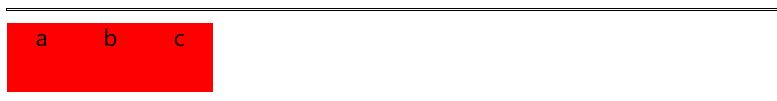
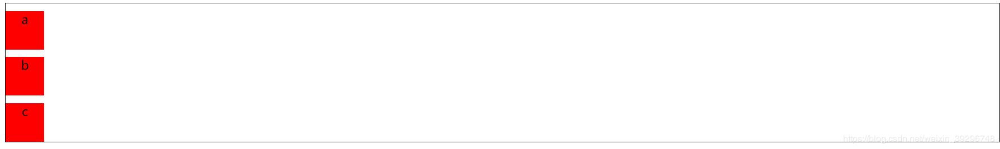

CSS浮动模型、div包裹浮动元素
时间：2020-3-6
摘要：CSS设计了浮动模型以进行页面的布局。但是浮动模型也带了了很多的问题。比如非浮动的div作为容器包裹不住浮动元素问题。所以本篇博客从原理出发讲解了对浮动模型的理解，以及如何解决div无法包裹浮动元素的问题。
一、问题明确
当一个div的子元素为浮动元素时，这个作为容器的div是不能将其子元素包裹住的。具体问题描述如下：
我们创建一个作为包裹容器的div，border设置为黑色的实线，其下有红色的div子元素。
<div class="wrapper"> <div class="box">a</div> <div class="box">b</div> <div class="box">c</div> </div> .wrapper{ text-align: center; border: 1px solid black; } .box{ margin-top: 10px; width:50px; height: 50px; background-color: red; }
其展示效果如下：

可以看到，红色的div都被黑色实线包裹住了。接下来我们将a、b、c三个div设置为向右浮动，即在.box选择器中添加 float: left;。a、b、c三个div的排列变为如下：
我们会发现，这个作为包裹容器的黑色方框并没有被a、b、c撑开，也就是说着三个div并没有被这个包裹容器包裹住。那么这是由于什么原因造成的呢？想要知道原因我们必须知道什么是css的浮动模型。
二、浮动模型
前面已经总结过了什么是层次模型（传送门），及绝对定位时，当前元素会脱离其所在层，来到新的层。那么这个元素也就不再占据原来所在层的位置。 那么浮动模型其实也有类似之处。当元素带有浮动属性时，那么它也来到了一个新的层，但是这个元素又不是完全脱离了它原来所在的层次，这个层次 中的有些元素还当这个元素还在这个层（这些元素有：产生了 bfc（带有position：absolute 或者 display：inline-block或者float：left/right或者overflow:hidden属性的的元素都称之为产生了bfc）和 文本属性的元素），其他元素则完全当它不存在了。
怎么理解上面这句话呢？我们一楼层做比喻。原来所有的元素都在第一层里。比如第一节提到的a、b、c三个div以及起包裹作用的div都在第一层，大家都占据了各自的位置， 当然包裹容器的黑色方框能把a、b、c包裹住。但是，当我们将a、b、b设置了浮动属性之后，那么我们可以将a、b、c视为搬到了第二层。此时包裹容器当然就包裹不住a、b、c了，自然也就没有被撑开。这是自然的，**第一楼的住户怎么能在一楼拥抱住二楼的用户呢？**而那些产生了bfc、或者是文本属性的元素却能在一楼就拥抱住二楼的用户呢？比如说，我们将包裹容器的css增加了overflow:hidden触发了bfc之后，它就能将另一层的a、b、c包裹住，如下：
这就相当于已经搬到二楼的用户a、b、c打了个电话给还在一楼的包裹容器，把a、b、c原来在一楼的位置告诉了包裹容器，这样，包裹容器就知道了该在一楼的哪个位置，多大范围包裹住原来a、b、c所在的位置。
三、解决办法
3.1、使得div产生bfc
这一点在上面已经说过了。
清除浮动属性三件套
使用伪元素选择器，在a、b、c的最后清除浮动的属性。也就是说让a、b、c搬回一楼：
.wrapper{ text-align: center; margin-left: 100px; margin-top: 10px; border: 1px solid black; } .box{ /*float: left;*/ margin-top: 10px; width:50px; height: 50px; background-color: red; } .wrapper::after{ content:""; clear:both; display: block; }
效果: